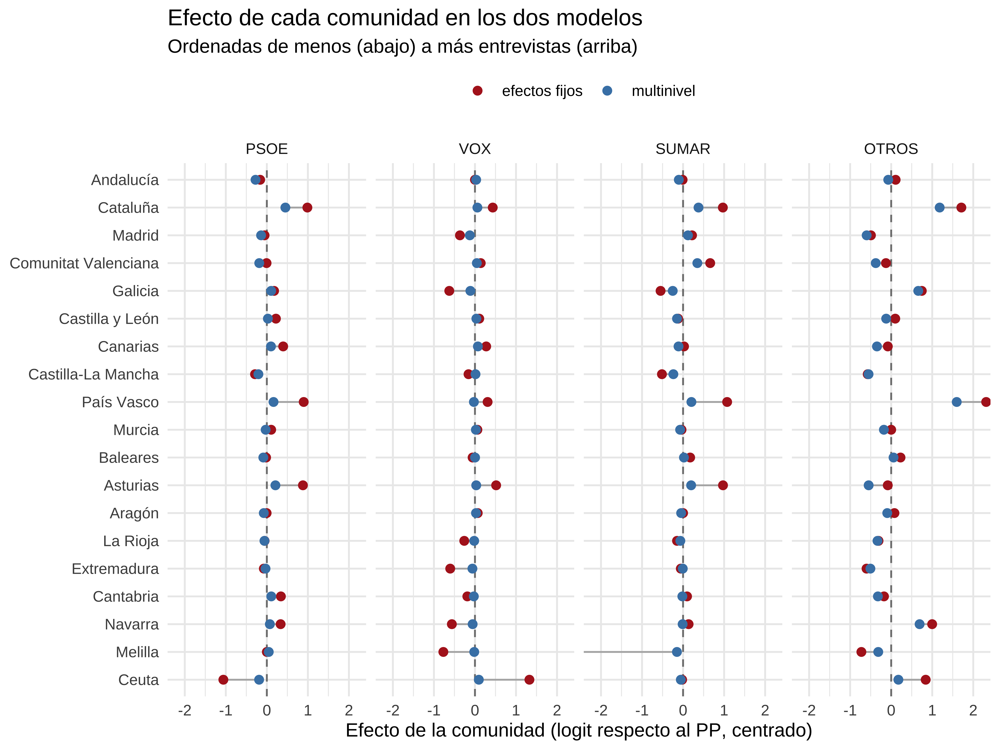
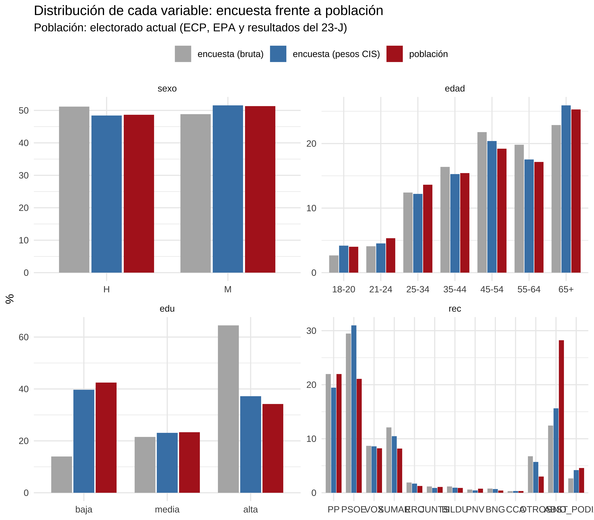
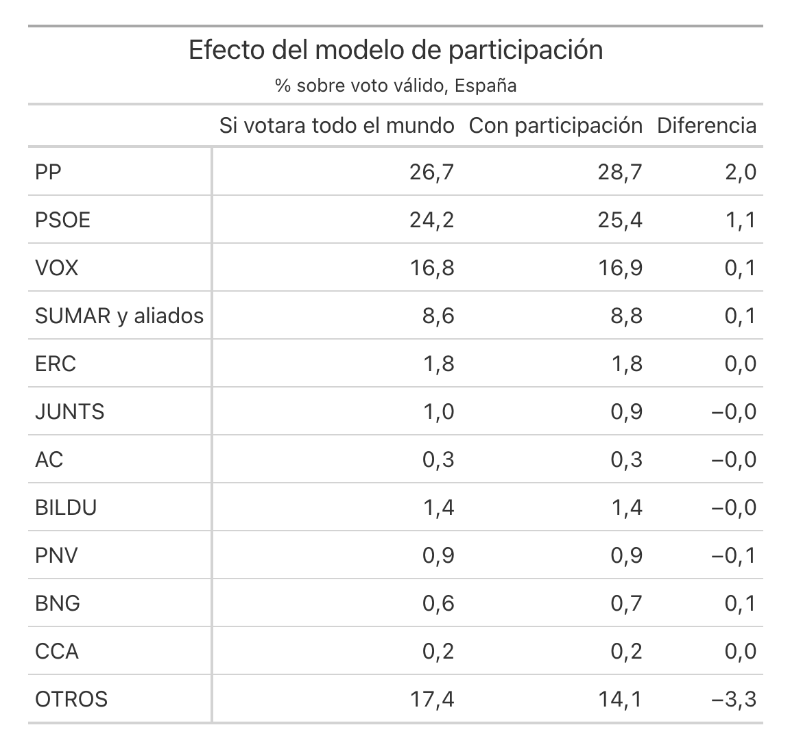
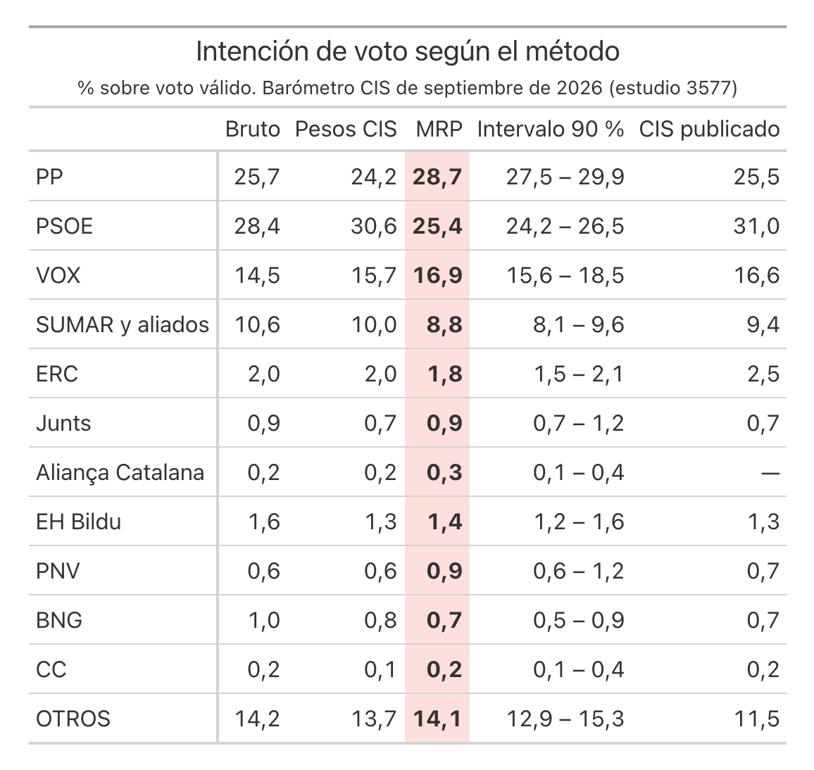
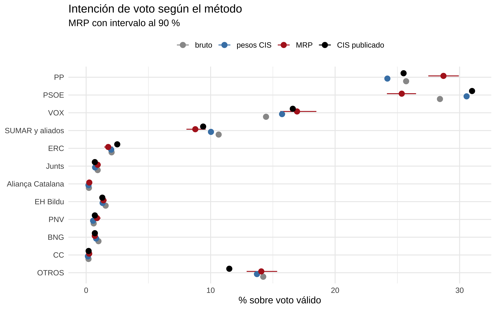
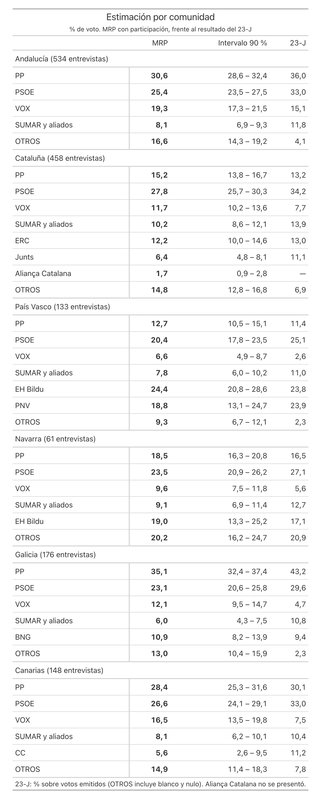
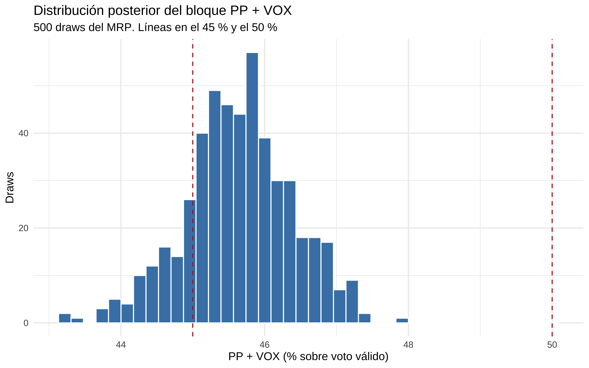
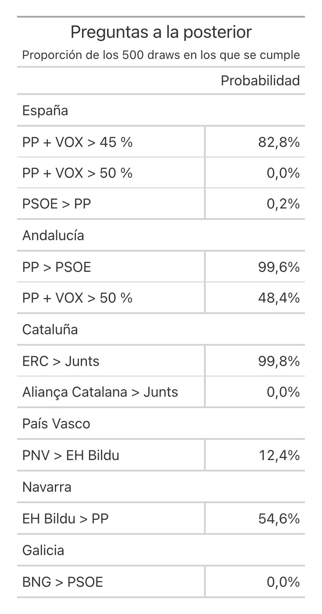

Cómo sacar más jugo a una encuesta del CIS con un modelo multinivel, una tabla de población fabricada a mano y la posterior completa
Esta es la versión corta. El post completo, con todo el código en R, está en el blog: MRP y raking: postestratificar sin tener la conjunta. Los scripts y los datos para reproducirlo están enlazados allí.
MRP son las siglas de Multilevel Regression and Poststratification. Son dos pasos:
Lo he probado con el barómetro del CIS de septiembre de 2026 (estudio 3577): 4.018 entrevistas, de las que 3.128 declaran un voto válido.
Si cruzo comunidad, sexo, edad y estudios salen 798 combinaciones. A cada una la llamo celda. Solo 544 tienen alguna entrevista, y 230 de ellas tienen una o dos personas. Por comunidad pasa lo mismo: Ceuta tiene 16 entrevistas, Melilla 17 y Andalucía 534.
Comparo dos modelos con las mismas variables:

En Melilla no hay ningún votante de SUMAR entre sus 17 entrevistas. El modelo de efectos fijos busca el coeficiente que mejor ajusta un 0, que es “menos infinito”, y se queda en −9,8 porque el optimizador se para. El multinivel no se cree que un 0 de 17 signifique que en Melilla nadie vota a SUMAR, y deja el efecto cerca de 0.
Y no contrae todo por igual. Las comunidades con 20 entrevistas o menos se acercan a la media en torno a un 90 %; las que tienen más de 200, en torno a un 50 %. Cuantos menos datos, más se fía el modelo del conjunto.

Dos desviaciones saltan a la vista:
Los pesos del CIS corrigen bien los estudios, la edad y el sexo. El recuerdo de voto, no: con sus pesos, el PSOE sigue en el 31,0 % y la abstención en el 15,6 %.
La postestratificación es una media ponderada. Para cada celda j tengo la predicción del modelo, θⱼ, y cuánta gente hay en ella, Nⱼ:
θ̂ = Σ Nⱼ · θⱼ / Σ Nⱼ
El problema es que necesito saber cuánta gente hay en cada combinación de comunidad × sexo × edad × estudios × recuerdo de voto, y esa tabla no existe. Lo que sí hay son tablas por separado:
Con ellas fabrico la tabla conjunta mediante raking (IPF). Parto de la tabla cruzada de la propia encuesta y la reescalo una y otra vez hasta que cuadra con las tres tablas oficiales. El raking cambia los totales, pero respeta las asociaciones de la encuesta en todo lo que las fuentes oficiales no cruzan.
Hay celdas que tienen que valer 0 sí o sí: son los ceros estructurales. Quien tiene hoy 18-20 años no pudo votar el 23-J. Y nadie pudo votar a ERC fuera de Cataluña, ni al BNG fuera de Galicia.
En el modelo final hay doce partidos: PP, PSOE, VOX, SUMAR y aliados (con Podemos, IU, Compromís…), ERC, Junts, Aliança Catalana, EH Bildu, PNV, BNG, Coalición Canaria y OTROS.
Los regionales tienen truco. Si ajusto el modelo tal cual, ve que en 18 comunidades nadie vota a ERC, lo toma como información y, por el partial pooling, subestima a ERC justo en Cataluña. La solución es meter los ceros estructurales dentro del modelo con un offset: un −20 en el predictor de cada partido regional fuera de su comunidad. Y en la postestratificación los pongo a 0 exacto.
La fórmula de arriba supone que todo el electorado vota. Y en la tabla de población, los abstencionistas de 2023 son casi un tercio. En Cataluña, contados enteros, aportaban más puntos al PP y a VOX que los propios votantes de esos partidos.
Así que añado un segundo modelo multinivel, de participación, a partir de la pregunta del CIS sobre la probabilidad de ir a votar. Me quedo con quien dice “10, con toda seguridad”. Lo dice entre el 84 % y el 90 % de quienes votaron a los partidos grandes en 2023, y solo el 38 % de los abstencionistas. La postestratificación pasa a ponderar por los que votan:
θ̂ = Σ Nⱼ · tⱼ · θⱼ / Σ Nⱼ · tⱼ
donde tⱼ es la probabilidad de votar de cada celda.

Con la participación, OTROS baja más de 3 puntos: los abstencionistas que ahora dicen que votarían eligen mucho OTROS, pero votan poco.


Donde más se nota es en el PSOE: 31,0 % en la estimación del CIS y 25,4 % con MRP. Mi interpretación es que viene del recuerdo de voto: la encuesta tiene muchos más votantes del PSOE en 2023 de los que hubo, los pesos del CIS no lo corrigen, y la postestratificación sí.
El CIS no publica estimaciones por comunidad, y con razón: con 61 entrevistas en Navarra o 133 en el País Vasco, el voto bruto no dice gran cosa. El MRP sí puede, porque cada comunidad toma prestada información del resto.

Hay cosas que cuadran, como EH Bildu en el País Vasco o el BNG en Galicia, cerca del 23-J. Y otras que me creo menos, como el PP por encima del 23-J en Cataluña: 15,2 % frente a 13,2 %. Parte viene de lo que declaran los pocos abstencionistas catalanes de la encuesta, y parte del pooling: el modelo no ve diferencias regionales claras en las transferencias de voto, así que aplica en Cataluña unas parecidas a las nacionales. El partial pooling protege de las celdas con pocos datos, pero también puede tapar diferencias reales cuando hay pocos datos para verlas.
Lo mejor de hacerlo bayesiano es que no tengo una estimación, sino 500 escenarios completos y coherentes entre sí. Cualquier pregunta se responde contando en cuántos se cumple.


El bloque PP + VOX pasa del 45 % en el 83 % de los escenarios, y no llega al 50 % en ninguno. En Andalucía, en cambio, PP + VOX pasa del 50 % en el 48 % de los escenarios: una moneda al aire.
Esto no se puede hacer con los intervalos de cada partido por separado: cuando el PP sube, VOX suele bajar (la correlación entre sus escenarios es de −0,58), y en cada escenario esa relación ya está dentro.
Todo el código, paso a paso, en el post completo del blog.